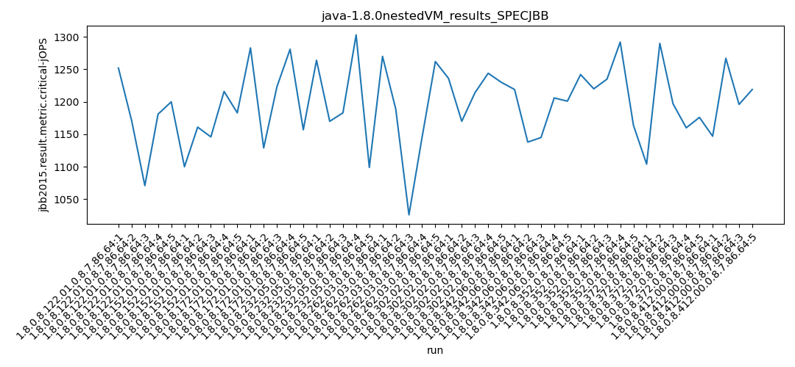

java-1.8.0 SPECJBB
Context at bottom
/home/jvanek/git/benchmarks-in-nested-virtualisation-toolchain/final_results/nestedVM_results/nestedVM_results_SPECJBB
java-1.8.0
SPECJBB
nestedVM_results_SPECJBB
- nestedVM_results_SPECJBB - max-jops
- nestedVM_results_SPECJBB - critical jops
nestedVM_results_SPECJBB - max-jops
Expected number of java-1.8.0 JDKs: 7
1st avgmed_alljdks_metric:
/home/jvanek/git/benchmarks-in-nested-virtualisation-toolchain/final_results/result_processing.py /home/jvanek/git/benchmarks-in-nested-virtualisation-toolchain/final_results/nestedVM_results/nestedVM_results_SPECJBB jbb2015.result.metric.max-jOPS False
values: [6090, 6149, 6284, 6120, 6020, 5985, 6145, 6321, 6159, 5882, 6007, 5605, 6187, 6330, 5985, 6020, 6090, 6052, 6187, 6198, 6261, 6231, 6446, 6187, 6359, 6279, 6359, 6088, 6118, 6231, 6315, 6185, 6359, 6284, 6353]

Expected number of iterations: 5
final number of values: 35 out of 35
Pass rate: 100.0%
values: (5605, 6446, 6167.742857142857, 6187)

** accuracy from all jdks and runs
more is better
MIN: 5605
MAX: 6446
AVG: 6167.742857142857
MED: 6187
Relative differences 1:
MIN-MAX: 13.0 %
MIN-AVG: 9.0 %
MIN-MED: 9.0 %
MAX-MIN: -15.0 %
MAX-AVG: -5.0 %
MAX-MED: -4.0 %
AVG-MED: 0.0 %
stored to java-1.8.0.properties. sort | uniq that!
2nd avgmed_by_jdk_metric:
values: [6132.6, 6098.4, 6022.8, 6109.4, 6296.8, 6215.0, 6299.2]

values: [6120, 6145, 6007, 6090, 6261, 6231, 6315]

values: (6022.8, 6299.2, 6167.742857142856, 6132.6)
values: (6007, 6315, 6167.0, 6145)

** accuracy from all jdks where runs were avged
more is better
MIN: 6022.8
MAX: 6299.2
AVG: 6167.742857142856
MED: 6132.6
Relative differences 1:
MIN-MAX: 4.0 %
MIN-AVG: 2.0 %
MIN-MED: 2.0 %
MAX-MIN: -5.0 %
MAX-AVG: -2.0 %
MAX-MED: -3.0 %
AVG-MED: -1.0 %
stored to java-1.8.0.properties. sort | uniq that!
** accuracy from all jdks where runs were medianed
more is better
MIN: 6007
MAX: 6315
AVG: 6167.0
MED: 6145
Relative differences 1:
MIN-MAX: 5.0 %
MIN-AVG: 3.0 %
MIN-MED: 2.0 %
MAX-MIN: -5.0 %
MAX-AVG: -2.0 %
MAX-MED: -3.0 %
AVG-MED: -0.0 %
stored to java-1.8.0.properties. sort | uniq that!
nestedVM_results_SPECJBB - critical jops
Expected number of java-1.8.0 JDKs: 7
1st avgmed_alljdks_metric:
/home/jvanek/git/benchmarks-in-nested-virtualisation-toolchain/final_results/result_processing.py /home/jvanek/git/benchmarks-in-nested-virtualisation-toolchain/final_results/nestedVM_results/nestedVM_results_SPECJBB jbb2015.result.metric.critical-jOPS False
values: [1252, 1171, 1071, 1181, 1200, 1100, 1161, 1146, 1216, 1183, 1283, 1129, 1223, 1281, 1157, 1264, 1170, 1183, 1303, 1099, 1270, 1189, 1026, 1146, 1262, 1236, 1170, 1214, 1244, 1230, 1219, 1138, 1145, 1206, 1201]

Expected number of iterations: 5
final number of values: 35 out of 35
Pass rate: 100.0%
values: (1026, 1303, 1190.5428571428572, 1189)

** accuracy from all jdks and runs
more is better
MIN: 1026
MAX: 1303
AVG: 1190.5428571428572
MED: 1189
Relative differences 1:
MIN-MAX: 21.0 %
MIN-AVG: 14.0 %
MIN-MED: 14.0 %
MAX-MIN: -27.0 %
MAX-AVG: -9.0 %
MAX-MED: -10.0 %
AVG-MED: -0.0 %
stored to java-1.8.0.properties. sort | uniq that!
2nd avgmed_by_jdk_metric:
values: [1175.0, 1161.2, 1214.6, 1203.8, 1178.6, 1218.8, 1181.8]

values: [1181, 1161, 1223, 1183, 1189, 1230, 1201]

values: (1161.2, 1218.8, 1190.542857142857, 1181.8)
values: (1161, 1230, 1195.4285714285713, 1189)

** accuracy from all jdks where runs were avged
more is better
MIN: 1161.2
MAX: 1218.8
AVG: 1190.542857142857
MED: 1181.8
Relative differences 1:
MIN-MAX: 5.0 %
MIN-AVG: 2.0 %
MIN-MED: 2.0 %
MAX-MIN: -5.0 %
MAX-AVG: -2.0 %
MAX-MED: -3.0 %
AVG-MED: -1.0 %
stored to java-1.8.0.properties. sort | uniq that!
** accuracy from all jdks where runs were medianed
more is better
MIN: 1161
MAX: 1230
AVG: 1195.4285714285713
MED: 1189
Relative differences 1:
MIN-MAX: 6.0 %
MIN-AVG: 3.0 %
MIN-MED: 2.0 %
MAX-MIN: -6.0 %
MAX-AVG: -3.0 %
MAX-MED: -3.0 %
AVG-MED: -1.0 %
stored to java-1.8.0.properties. sort | uniq that!
/home/jvanek/git/benchmarks-in-nested-virtualisation-toolchain/final_results/nestedVM_results/nestedVM_results_RADARGUNs1
java-1.8.0
SPECJBB
/home/jvanek/git/benchmarks-in-nested-virtualisation-toolchain/final_results/nestedVM_results/nestedVM_results_DACAPO
java-1.8.0
SPECJBB
/home/jvanek/git/benchmarks-in-nested-virtualisation-toolchain/final_results/nestedVM_results/nestedVM_results_JMH
java-1.8.0
SPECJBB
pass rates:
nestedVM_results_SPECJBB=100.0%
Context:
- nestedVM_results
- SPECJBB